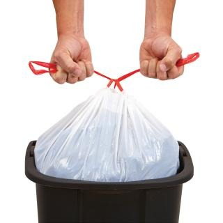
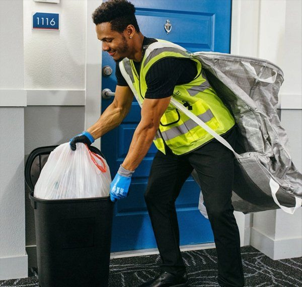

Preparation
- Bag and tie all waste - loose items are a safety hazard for our Service Valets.
- Double-bag pet waste to prevent leaks and stains outside your home.
- Aim to keep the weight of your bags to 25 pounds or less.
- Do not include needles or other sharp objects.
- Help aid the collection process by breaking down all cardboard boxes.

Collection
- Place your tied waste in your Tied and True provided container outside your home between 4:00 and 6:00 PM on the scheduled nights of service.
- Doorstep collection will start at 6:00 PM.
Non-service Hollidays
- Easter Sunday
- Memorial Day
- Fourth of July
- Labor Day
- Halloween
- Thanksgiving Day
- Christmas Eve & Christmas Day
- New Year's Eve & New Year's Day

Next Morning
- After your doorstep collection service has been completed, bring your Tied and True provided container back inside your home.
Tell us how we're doing!
267.567.2736
Service@TiedandTrue.com
www.TiedandTrue.com